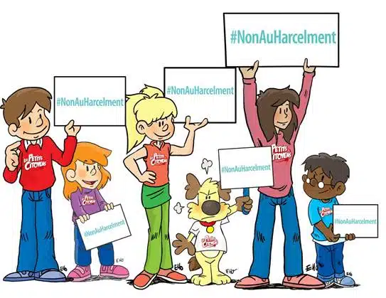

Bienvenue sur notre plateforme
Nous sommes là pour vous aider à signaler les cas de harcèlement et à trouver du soutien.
Signaler un harcèlementSignalement anonyme
Nous vous offrons la possibilité de signaler un cas de harcèlement de manière anonyme pour vous protéger.
Forum
Notre plateforme vous permet également de publier des contenus sous forme de blogs pour partager vos expériences et témoignages.
Soutien
Nous offrons un soutien psychologique et juridique pour les personnes victimes de harcèlement.
QUALIFICATION DU HARCÈLEMENT
Les harcèlements moraux et sexuels sont des comportements inappropriés et répréhensibles qui peuvent causer des dommages physiques, émotionnels et psychologiques à la victime. Il est crucial de signaler ces types de harcèlement pour plusieurs raisons.
LES FORMES
Les harcèlements moraux et sexuels sont des problèmes sociaux qui ont des conséquences graves sur la santé et le bien-être des victimes. Le harcèlement moral peut prendre plusieurs formes, notamment la diffamation, les insultes, la discrimination, l'intimidation et les menaces. Il peut se produire dans de nombreux contextes différents, notamment sur le lieu de travail, à l'école ou sur les réseaux sociaux.
De même, le harcèlement sexuel peut prendre plusieurs formes, notamment les commentaires offensants, les avances non désirées, le toucher non consenti et les images sexuellement explicites. Il peut également se produire dans de nombreux contextes différents, notamment dans les espaces publics, sur les lieux de travail, à l'école et en ligne.
LES EFFETS
La non-dénonciation du harcèlement peut causer des dommages à long terme à la victime et même affecter sa santé mentale. La victime peut se sentir isolée, anxieuse et déprimée en gardant le harcèlement pour elle-même. En signalant le harcèlement, la victime peut recevoir le soutien nécessaire pour surmonter ces épreuves difficiles.
PRONONCEZ-VOUS
Signaler le harcèlement peut aider à prévenir de futures agressions en informant les autorités compétentes de l'existence de tels comportements. Les auteurs de harcèlement doivent être tenus responsables de leurs actes, et signaler le harcèlement est un moyen d'y parvenir.

En somme, il est important de signaler tout harcèlement moral ou sexuel pour protéger les victimes, prévenir de futures agressions et faire en sorte que les auteurs de harcèlement soient tenus responsables de leurs actes.